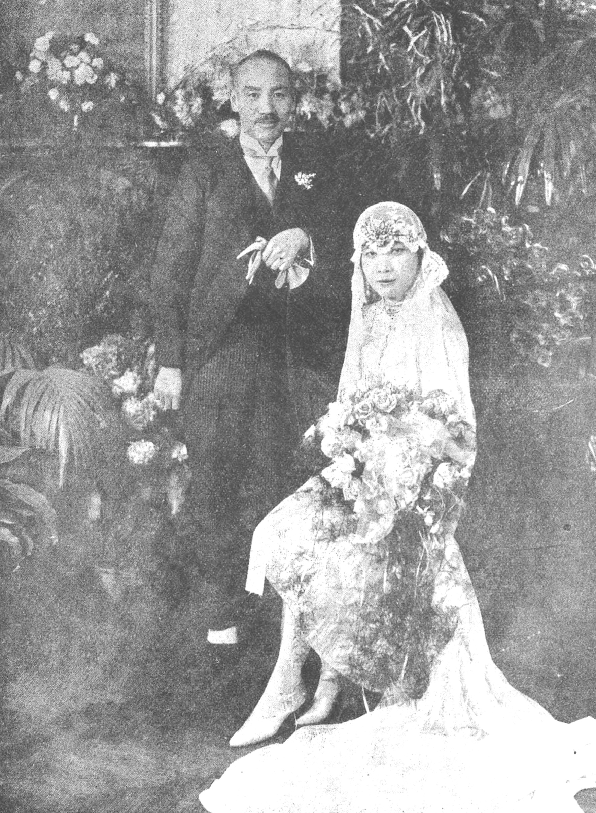
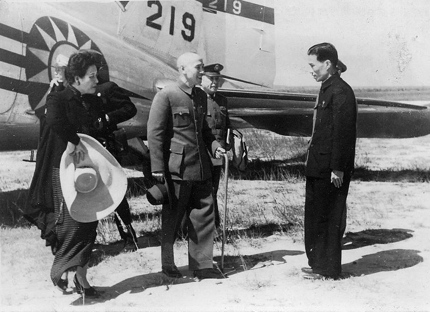
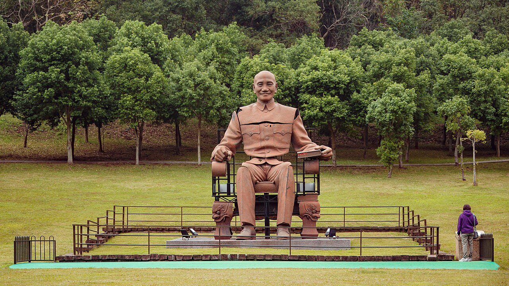

第一章
溪口少年 · 求学与从军
溪口位于浙江奉化的山间，剡溪自此流过。蒋介石幼年入私塾读经史，青年时先后就读于保定军校与日本振武学校， 接受近代军事训练。辛亥之年他返国投身革命，此后十余年间在粤军与革命党人中辗转历练。
1923 年，他曾作为「孙逸仙博士代表团」成员赴苏联考察军事与党务，这段经历对其后的建军思路影响深远。
第一辑 · 近代人物
1887 — 1975
名中正 · 字介石 · 浙江奉化溪口人
“以国家兴亡为己任，置个人死生于度外。”
蒋介石（1887—1975），名中正，字介石，浙江奉化溪口人，二十世纪中国重要的军事与政治人物之一。 他自黄埔建军起进入政治舞台的中心，历经北伐、抗日战争与国共内战；1949 年后退守台湾，在那里度过晚年。
关于他的功过是非，史学界与两岸社会至今仍有不同的评价与叙述。本页不试图给出定论， 而是按时序梳理其生平脉络，辅以公开的历史照片与文献线索，供读者自行体察。
页面所用图像多来自公有领域及开放授权档案（详见文末「资料与说明」）。
10 月 31 日生于浙江奉化溪口镇，乳名瑞元，学名志清，后改名中正，字介石。
赴日本学习军事，后入振武学校，并在日本陆军部队中实习。
辛亥革命爆发后返国，参与光复上海、杭州等地的行动。
受孙中山委任，出任黄埔军校（陆军军官学校）校长，主持国民革命军的干部养成。
就任国民革命军总司令，率军北伐，以期结束北洋军阀割据的局面。
南京国民政府成立；同年 12 月 1 日与宋美龄在上海结婚。
北伐完成，全国在形式上归于统一，出任国民政府主席。
12 月于西安被张学良、杨虎城扣留，事变最终以和平方式解决。
七七事变后全面抗战爆发，任军事委员会委员长，国民政府迁驻重庆。
与美国总统罗斯福、英国首相丘吉尔会晤，共商战后远东的安排。
8 月日本投降，中国取得抗日战争的胜利；其后内战再起。
行宪后当选中华民国第一任总统，翌年局势逆转。
国民政府迁往台北，次年复行视事，此后在台湾主持政务与建设。
4 月 5 日病逝于台北士林官邸，享年 89 岁；灵柩暂厝桃园慈湖。
第一章
溪口位于浙江奉化的山间，剡溪自此流过。蒋介石幼年入私塾读经史，青年时先后就读于保定军校与日本振武学校， 接受近代军事训练。辛亥之年他返国投身革命，此后十余年间在粤军与革命党人中辗转历练。
1923 年，他曾作为「孙逸仙博士代表团」成员赴苏联考察军事与党务，这段经历对其后的建军思路影响深远。
第二章
1924 年，黄埔军校在广州长洲岛创立，孙中山任总理，蒋介石任校长。军校以「亲爱精诚」为校训， 培养出一批批军事与政治干部，成为国民革命军的骨干。
建校之初，军校在苏联顾问的协助下建立制度、编练部队；国共合作亦以此为重要舞台， 校内政治教育与军事训练并行。
第三章
1926 年 7 月，国民革命军在广州誓师北伐。两年之间，北伐军由南而北，击破吴佩孚、孙传芳等部； 1928 年，东北易帜，全国在形式上归于统一。
此后十年，南京国民政府推进关税自主、币制改革与基础设施建设，被部分史家称为「黄金十年」； 与此同时，内部纷争与「剿共」战事亦未曾停歇。1936 年的西安事变，成为其政治生涯的重要转折。

第四章
1927 年 12 月 1 日，蒋介石与宋美龄在上海结婚。此后近半个世纪，宋美龄以其出色的外语与社交能力， 在抗战外交、妇女工作与国际宣传等方面扮演重要角色。
1943 年的开罗会议上，宋美龄以蒋介石的翻译与顾问身份随行，成为当时国际舆论关注的焦点之一。
第五章
1937 年七七事变后，全面抗战爆发。国民政府迁都重庆，以西南为根据地坚持抵抗； 蒋介石以军事委员会委员长身份统筹战局，中国战场成为世界反法西斯战争的重要一环。
1943 年 11 月，他与罗斯福、丘吉尔在开罗会晤，会后发表的《开罗宣言》明确日本须归还所窃取的中国领土。 1945 年 8 月，日本宣布无条件投降。

第六章
抗战胜利后，国共内战全面爆发。1949 年，国民政府迁往台北，蒋介石于次年复行视事， 此后在台湾主持政务，推动土地改革、经济与教育事业的发展。
晚年他深居简出，1975 年 4 月 5 日病逝于台北士林官邸。其灵柩依遗愿暂厝桃园慈湖， 至今未正式下葬。
以上为历史照片的缓动放映，非动态录像。放映机效果仅为视觉设计。

本页历史照片取自维基共享资源（Wikimedia Commons），多为美国政府档案、民国报刊与公有领域（Public Domain）影像，
部分为自由授权作品。图片已下载至本地 assets/img/。
页面文字为按时序整理的背景叙述，仅供概览；具体史实、数据与评价请参阅相关学术著作与档案。
背景音乐为本地文件《东南苦行山》，页面加载后自动循环播放，右下角悬浮球可随时暂停或继续。
— 民国人物志 · 第一辑 —